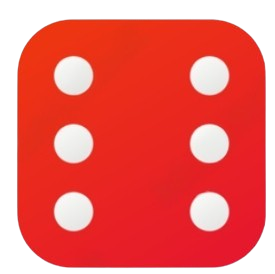
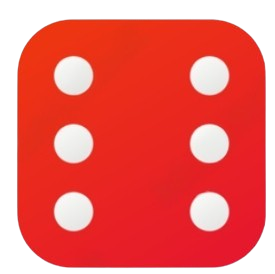

TOTAL COMBINATION


 

Die One Counter: 1
Die Two Counter: 1
Combination Counter: 1
Hence the total number of combinations is: 6^(number of dice).
Each die has 6 faces, so when two dice are rolled, each die can show any of its 6 faces, thus resulting in 6 combinations for each roll.
Therefore, there are a total of 6 x 6 = 36 possible outcomes when two dice are rolled.